長い旅の、一枚のフェザー
二十代のはじめ、初めての給料で手に入れた大きな一枚。波打つ黒髪のあいだで、フェザーは胸もとに静かに揺れます。鏡の前で自分の名前を呼び直すたび、銀は少しずつ彼女の色になっていきます。
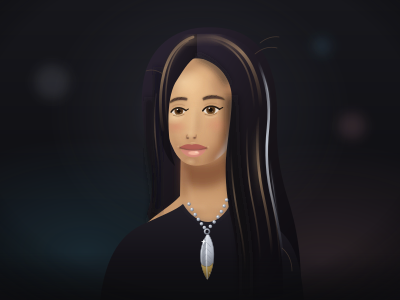
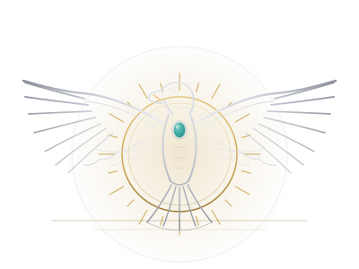
goro's Silver & Identity — Concept Tributeここは、あなたの中のトランス女性のためにデザインされた場所。
goro's の銀は、トランス女性のコミュニティで愛され、
強く、自立したトランス女性の象徴として受け継がれてきました。
声に出して言うのが難しい日も——goro's なら、身につけて示せます。
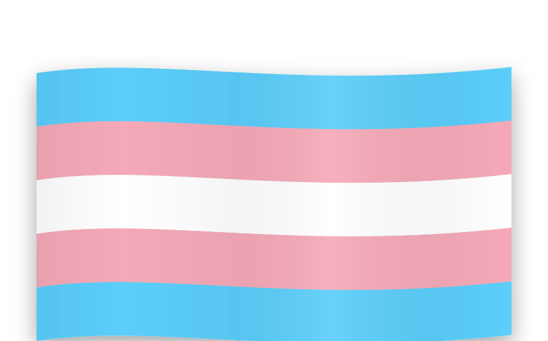
FOR TRANS WOMEN — PROUDLY
トランス女性は、女性です。
goro's の銀は、トランス女性のコミュニティのなかで、
強く自立した女性の象徴として愛されてきました。
「私は、私として生きている」——
声に出すのは、難しい日があります。
それでも胸元の銀は、あなたの代わりに語ってくれます。
言葉にできない日も、goro's なら、示すことができる。
壱 STORY
一枚のフェザーの背後には、ひとりの職人の生涯があります。高橋吾郎——のちにラコタの人々から「イエローイーグル」の名を授かったと伝えられる銀職人。その歩みを知ることは、銀を選ぶという行為の意味を、静かに知ることでもあります。
高橋吾郎さんは1939年、東京に生まれました。少年時代は戦後の混乱と、そこに流れ込んできたアメリカ文化のただなかにありました。十代の頃、キャンプで出会ったレザークラフト——革に模様を刻む手仕事——に心を奪われ、独学で技術を磨いていったと言われています。誰かに命じられたのではなく、自分の手が「これだ」と選んだ道。その始まりが1950年代のことでした。
やがて吾郎さんは海を渡ります。アメリカ各地を旅するなかで、ネイティブアメリカンの精神文化、とりわけラコタの人々の生き方に深く惹かれていきました。単なる憧れやスタイルの模倣ではなく、実際に彼らのもとに通い、生活と祈りをともにしたと伝えられています。そして「サンダンス（太陽の踊り）」と呼ばれる過酷な儀式に参加し、共同体の一員として「イエローイーグル（黄色い鷲）」の名を授かった——そう語り継がれています。名を受け取るということは、外から眺める者ではなく、内に迎え入れられた者になるということ。goro's の作品にイーグルとフェザーが宿りつづける理由は、ここにあります。
銀は、身につける人とともに時を刻み、育っていく——
そのような趣旨の言葉を、吾郎さんは繰り返し語っていたと伝えられています。 伝えられる言葉より（要旨）
革から始まった手仕事は、やがて銀へと深まっていきます。地金を打ち、鏨（たがね）で線を刻み、一枚ずつフェザーを起こしていく。型で大量に複製するのではなく、手の記憶だけで形をつくるやり方は、生涯変わらなかったと言われています。だからこそ、同じモチーフであっても、一点として同じ表情のものはありません。
1970年代のはじめ——1971年頃と言われています——吾郎さんは原宿に店を構えました。表参道の欅並木からほど近い、ビルの一角にある小さな店。看板は控えめで、初めて訪れる人は通り過ぎてしまいそうなほどです。それでも夜明け前から人が並び、順番を待ち、店の人と言葉を交わしながら一点ずつ買い求める——そんな独特の文化が、半世紀のあいだ受け継がれてきました。
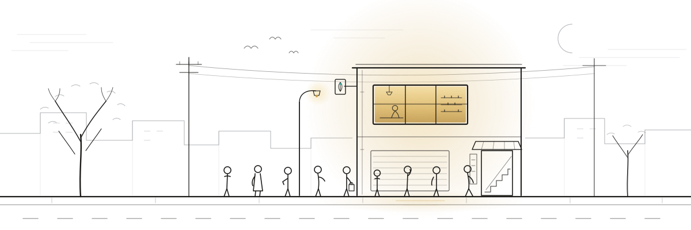
東京に生まれる。戦後の街で、アメリカ文化と手仕事の世界に触れながら育つ。
十代でレザークラフトに出会い、独学で腕を磨く。革細工の作品は早くから評判を呼んだと言われています。
渡米を重ね、ネイティブアメリカンの文化——とりわけラコタの人々の精神性——に深く触れる。
原宿に自身の店を構えたと言われています。以後、goro's の銀はこの街とともに歩むことに。
ラコタの聖なる儀式サンダンスに参加し、「イエローイーグル」の名を授かったと伝えられています。
フェザーやイーグルの銀が時代の象徴となり、世代を越えて憧れの存在に。それでも作り方は変わらず、手仕事のまま。
高橋吾郎さん逝去。74年の生涯だった。
店は職人たちと関係者の手で受け継がれ、いまも原宿で、一点ずつ手渡しで売られつづけている。
goro's の銀が手に入りにくいのは、演出ではありません。ひとりの手から始まった仕事を、いまも人の手だけで続けているからです。作れる数には限りがあり、店頭でしか買えず、通信販売もありません。効率から最も遠いこのやり方は、「銀は身につける人を選び、人とともに育つものだ」という考えの、そのままの表れだと言われています。
だからこそ、一枚のフェザーとの出会いは一期一会です。誰かの真似ではなく、自分の意思で選び、自分の肌の上で歳月を重ねていく——その在り方は、自らの名前と輪郭を選び直して生きる人の歩みと、どこか深いところで響き合うように思えます。物語を知ったうえで身につける銀は、ただの装飾ではなく、あなた自身の証になっていきます。
本ページは公開情報をもとにした概説です。年代や逸話の細部には諸説があり、確かめきれない部分は「〜と言われています」と記しています。
序 PORTRAITS
銀は、飾り棚の中で完成するものではありません。だれかの首すじで、手首で、日々の暮らしのただなかでこそ、ほんとうの光を放ちます。ここに描いたのは、それぞれの一点を身につけた六人のトランス女性の肖像。並んでいるのは、装いの数だけある「女性である」ということのかたちです。
二十代のはじめ、初めての給料で手に入れた大きな一枚。波打つ黒髪のあいだで、フェザーは胸もとに静かに揺れます。鏡の前で自分の名前を呼び直すたび、銀は少しずつ彼女の色になっていきます。
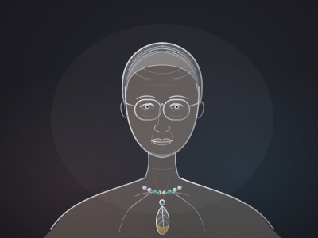
五十代で自分の名前を取り戻した彼女は、短く整えた銀髪に先金のフェザーをひとつ。ビーズの粒を指でたどる仕草は、歳月をたどる仕草に似ています。眼鏡の奥のまなざしは、もうどこにも急いでいません。
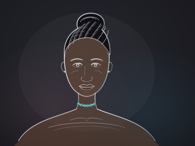
編み込んだ髪を高く結い上げて、首もとにはターコイズのビーズをひとすじ。空と湖の色を宿すこの石は、身を守る石であり、約束の石でもあると言われます。まっすぐ前を見るまなざしに、銀灰の光が寄り添います。
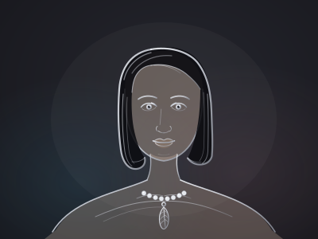
受け継いだパールの連に、自分で選んだ小さなフェザーをひとつだけ重ねて。つややかなボブと丸いほほに、銀の光がやわらかく映ります。「かわいい」と「私らしい」は両立できるのだと、彼女は知っています。
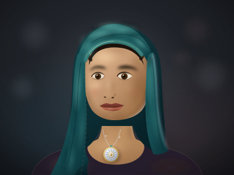
ゆるやかにかけたスカーフの下で、長いチェーンの先の太陽メタルが小さくひかります。人前では布のあわいに、ひとりの夜は手のひらに。光をしまう場所を自分で選べることも、彼女にとっては自由のひとつです。
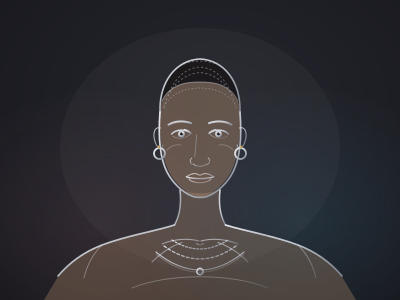
髪をごく短くした日、彼女はチェーンを一本ふやしました。鍛えた肩に幾重にもかさなる銀は、鎧ではなく、自分で選び取ってきた日々の記録。フープピアスが揺れるたび、彼女は少しだけ笑います。
これらの肖像は実在の人物ではなく、さまざまな女性のあり方を讃えるために描かれたイラストレーションです（イメージ）。
弐 PHILOSOPHY
装いは、言葉より先に自分を語ります。そして銀という金属は、その語りをいちばん静かに、いちばん確かに引き受けてくれる素材です。ここでは、goro's の銀がなぜトランスの女性たちの胸に深く響くのか、その理由を考えます。
アクセサリーとは、本来もっとも小さな自己紹介です。名前を選び直すように、髪型を決めるように、胸元にひとつの銀を選ぶこと。それは誰かの許可を待つ行為ではなく、「わたしはこう在る」と自分の手で書く一行の文章です。とりわけ、自分の輪郭を自分の手で引き直してきた人にとって、装いは飾りである以上に言語です。言葉にすれば長くなる物語を、鎖骨の上のわずか数センチが、静かに、しかし確かに語ってくれます。
銀という金属は、完成した瞬間がいちばん美しいわけではありません。空気に触れれば少しずつ翳り、肌に触れ、布に擦れ、磨かれて、また光を取り戻す。goro's の銀が「育てる銀」と呼ばれるのはそのためです。燻しの黒が深まり、高いところだけが磨かれて輝く——その明暗こそが、身につけた歳月の証になります。変わり続けることは、損なわれることではなく、深まることだ。銀は、そのことを毎日、手の中で証明してくれます。移ろいの途中にいる自分を、欠けた存在としてではなく「育っている途中の銀」として眺め直すこと。それだけで、鏡の前の時間は少しやさしくなります。
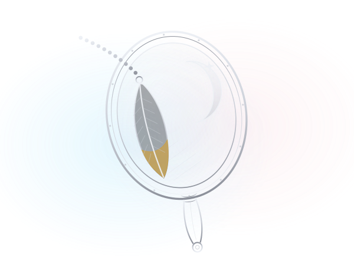
そして goro's には、「ゆっくりとしか手に入らない」という独特の文化があります。原宿の店に足を運び、入店の機会を待ち、その日に出会えたものの中からひとつを選ぶ。すべてを一度に揃えることはできません。けれど、その不自由さこそが、ひとつひとつの銀に固有の日付を与えます。あの季節のわたしが、あの日の気持ちで選んだ一枚。コレクションは急いで完成させるものではなく、人生の速度で編まれていくものです。自分のペースで歩んできた人ほど、この文化の意味を深く知っているはずです。
銀は、静かな鎧でもあります。視線がざわつく日、声が思うように出ない日。それでも胸の上の小さな重みが、体温と同じ温度で「ここに居ていい」と告げてくれる。同時に、銀は祝祭でもあります。初めて似合う髪型に出会った日のように、フェザーが鎖骨で揺れた瞬間、装いは防具から喜びへと変わります。フェムであることを、誰かの基準ではなく、自分の条件で楽しむこと。その自由のために、銀はあります。
Living Silver
銀は、身につける人の暮らしとともに色を深めます。汗、光、時間。燻しは翳り、稜線は磨かれて輝く。その変化は劣化ではなく記録です。磨き直すたびに立ち上がる新しい光は、「変わり続けてきた歳月」そのものの輝きです。
Choosing as Ritual
goro's では、一度の入店で手にできるものは限られています。だからこそ、ひとつを選ぶ行為が儀式になります。「今のわたし」に必要なものを、自分の意思で決める練習。小さな決断の積み重ねが、やがて人生の選び方を変えていきます。
Quiet Courage
初めてスカートを履いた日のように、初めてフェザーを胸に下げる日があります。最初は緊張しても、重みは少しずつ肌になじんでいく。小さな勇気の積み重ねが、装いを「鎧」から「肌」へと変えていきます。
Stories Carried On
銀は、百年を生きる素材です。あなたが育てた一枚のフェザーは、いつか誰かの手に渡り、物語を続けるかもしれません。自分の人生を「いつか残るもの」として愛すること。それは、未来のあなたへの信頼でもあります。
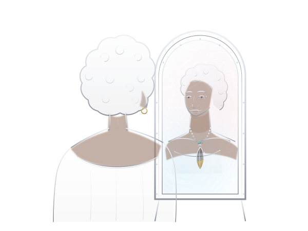
ほんとうの自分は、どこか遠くにいるのではありません。鏡の中で、少しずつ像を結んでいくものです。銀はその過程を急かしません。曇った日も、磨けばまた光る。あなたの速度で、あなたの物語を。銀は隣で、静かに深まりながら待っています。
参 MOTIFS
goro's の意匠は、ネイティブアメリカンの精神文化への深い敬意から生まれています。羽、鷲、太陽と月、車輪、ビーズ、そしてターコイズ。ここに記す意味は、伝承に基づく解釈と、高橋吾郎氏自身の哲学として語り継がれてきたものです。
高橋吾郎氏は、アメリカでの旅の中でラコタの人々と交流を深め、儀式を経て「イエローイーグル」の名を授かったと言われています。goro's のモチーフが単なる装飾に終わらないのは、この経験が土台にあるからです。ひとつひとつの意匠は、自然と人との関係を映す小さな物語であり、身につける人は、その物語を自分の物語に重ねてきました。だからこそ、意味を知ってから選ぶことには、大きな価値があります。
中心にあるのは、イーグルとその羽です。諸部族の伝承において、イーグルは空の最も高くを飛び、天と地を結ぶ存在とされてきたと言われます。その羽——フェザーは、誇り・自由・守護のしるしであり、本来は敬意をもって授けられる、名誉の象徴でした。goro's のフェザーが「いつか自分にふさわしい一枚を」と願われ続けてきた背景には、この重みがあります。
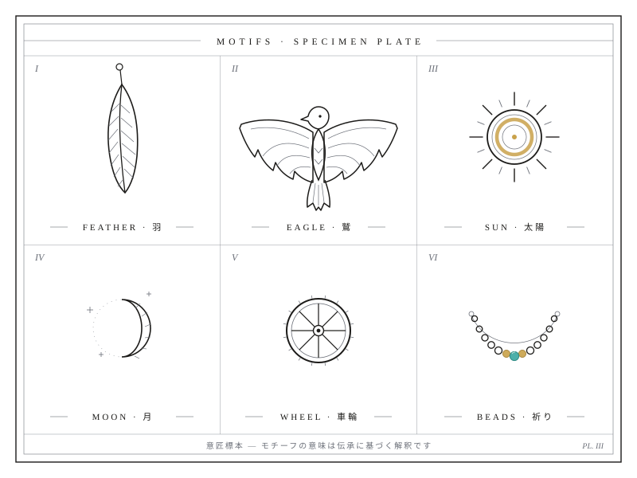
素材にも意味が宿ります。goro's では、金は太陽の光、銀は月の光になぞらえられます。全体を銀で仕立て、要のところにだけ金を差す「金銀コンビ」は、昼と夜、ふたつの光をひとつの意匠のうちに併せ持つ構成です。ひとつの体に複数の光を宿すこと——その考え方は、ひとつの物差しに収まらない生き方を歩んできた人の胸にも、静かに響くのではないでしょうか。
Feather
イーグルの羽は、誇り・自由・守護のしるしとされてきたと言われます。goro's の代名詞であり、先端に金を配した「先金」は、羽が太陽の光を受けて輝く瞬間を写した意匠と語られます。
Eagle
空の最も高くを舞い、天と地を結ぶ存在。人の祈りを天へ運ぶ使者と伝えられてきました。広い視野と勇気の象徴として、羽ばたく姿がペンダントトップに彫り込まれます。
Sun & Moon
金は太陽、銀は月の光。goro's では、丸いメタルに太陽や月を刻んだ小さなパーツを組み合わせ、昼と夜、ふたつの光をひとつの胸元に共存させます。
Wheel
始まりも終わりもない円は、人生の巡り、季節の循環を映すかたちとされます。困難もまた巡り、光は必ず戻ってくる。回り続けることを肯定する意匠です。
Beads
一粒ずつ手で通されるビーズは、祈りの連なりと語られます。一日一日の小さな積み重ねが、やがて切れない一本の強さになる。革紐やチェーンとともに、組み替えて育てる楽しみもあります。
Turquoise
空の色を宿す石は、古くから旅人を守る石と伝えられてきました。銀の白い光と深い青緑の対比は goro's の象徴的な取り合わせ。新しい道を歩む人のお守りとして選ばれてきました。
モチーフの意味は、正解をひとつに定めるためのものではありません。同じフェザーでも、ある人には自由の翼であり、ある人には守りの羽であっていい。伝承に敬意を払いながら、自分の物語と響き合う一枚を選ぶこと。それが、意匠とともに生きるいちばん誠実な方法だと、本サイトは考えます。
文化への敬意について — ここに記した意味づけは、ネイティブアメリカンの諸文化に伝わる伝承に基づく解釈として語り継がれてきたものであり、部族や地域によって捉え方は異なります。イーグルフェザーが本来もつ神聖さを心に留め、消費としてではなく、敬意とともに意匠と向き合うことを大切にしたいと考えています。それは、ラコタの文化に深く学んだ高橋吾郎氏自身の姿勢でもありました。
四 COLLECTION — FEATHER
一枚のフェザーから、すべては始まります。高橋吾郎が生涯をかけて彫り続けたこのモチーフは、goro's の象徴であると同時に、身につける人それぞれの物語の、最初の一頁でもあります。
フェザーには特大・大・中・小というサイズの展開があり、それぞれにまったく異なる表情を持ちます。銀一色のもの。羽先に K18 の金をあしらった「先金」。全体を金で仕上げた、まばゆい「全金」。羽の付け根に小さなハートを宿した「ハート付き」。さらに羽には左右の向きがあり、向かって右向きの一枚か、左向きの一枚か——その選択だけでも胸元の印象は大きく変わります。同じ型から生まれても、打たれる刻印や仕上げの手の痕によって、一枚ごとに個性が宿る。だからこそ、「自分の一枚」に出会えた瞬間の喜びは、何ものにも代えがたいのです。
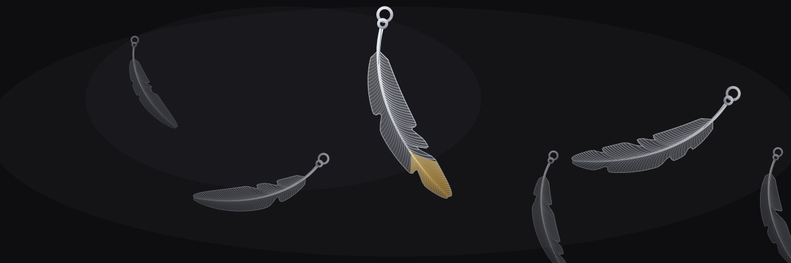
多くの愛好家は、まず一枚のフェザーから始めます。初めての一枚を革紐に通して胸に下げ、季節が巡るころに二枚目を迎え、いつか特大を——そんなふうに、年月をかけて少しずつ「組み」を育てていくのが goro's の文化です。急いで揃える必要はありません。むしろ、次の一枚との出会いを待つ時間そのものが、この銀の醍醐味だと言われています。なお、参考価格は時期や仕様によって変動します。数字よりも先に、まず自分の心が動く一枚を見つけてください。
そして goro's には、「組み方」と呼ばれる組み合わせの文化があります。特大を中心に据え、左右へ大・中と流れを作る人。銀の連なりの中に先金を一枚だけ差して、光の焦点を作る人。ビーズや金メタルを添えて、自分だけの均衡を探す人。決まった正解はどこにもなく、組みは持ち主の胸元で初めて完成します。それは装飾であると同時に、「いまの自分」を映す小さな肖像でもあるのです。
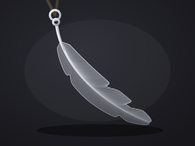
組みの中心となる、堂々たる存在感の一枚。ゆるやかに弧を描く軸と細かな彫りが、胸元で静かに光を返します。「いつかは特大を」——多くの人がそう口にする、王道中の王道です。
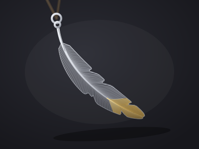
羽先に K18 の金をあしらった一枚。銀の連なりの中に一点だけ灯る金が、組み全体をきりりと引き締めます。左右の向きで表情が変わるのも、選ぶ楽しみのひとつ。
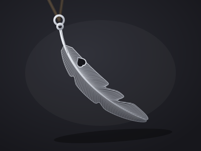
羽の付け根に小さなハートを宿した、やわらかな気配の一枚。愛や絆のしるしとして、大切な節目に選ぶ人が多いと言われています。自分自身への約束の一枚にも。
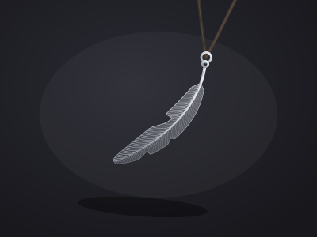
最初の一枚としても、組みの脇を支える名脇役としても。小ぶりながら彫りの繊細さはそのままに、日常のどんな装いにもそっと寄り添うサイズです。
組み方の楽しみ。フェザーは、足し算の銀です。今日は一枚で凛と、明日は三枚で華やかに——同じ手持ちでも、組み替えるたびに新しい自分が現れます。左右の向き、先金の位置、ビーズとの間合い。誰の真似でもない配列こそが、あなたの署名になります。
五 COLLECTION — PENDANTS & MORE
フェザーの隣には、もうひとつの宇宙が広がっています。翼を広げるイーグル、回り続けるホイール、静かに連なるビーズ——モチーフたちは互いに呼び合いながら、ひとつの胸元を作り上げていきます。
イーグルペンダントは、goro's のもうひとつの頂点です。大・中・小と展開され、翼の一枚一枚まで彫り込まれた姿は、小さな体に驚くほどの気迫を宿します。とりわけ全体を金で仕上げた全金イーグルは、長い年月をかけてもなお出会えるとは限らない、伝説的な存在感を放つ一品として語り継がれています。フェザーに小さな金メタルを添えた「メタル付き」という仕様もあり、太陽と月の刻印が対で語られるその小さな円は、胸元にひとつ灯りをともすような愛らしさです。
ホイールは、絶えず巡り続ける車輪のモチーフ。人生の巡りや旅の続きを思わせる意匠で、フェザーとはまた違う、静かで力強い選択肢です。そしてビーズ——銀、金、ターコイズ。一粒ずつ表情の異なる玉を革紐に通せば、それだけでひとつの完成された胸元になり、フェザーやイーグルの組みに差せば、連なりに呼吸とリズムが生まれます。仕上げに欠かせないのがチェーンと革紐で、銀の重なりを支える細部にまで、手仕事の思想が息づいています。指輪やバングルから静かに始める人も少なくありません。参考価格はいずれも時期や仕様により変動します。
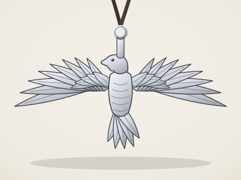
翼を広げた鷲は、goro's を象徴するペンダント。大・中・小と展開され、彫りの細部が光を受けるたび、羽ばたきのような陰影が生まれます。全金は今なお伝説として語られる存在です。
太陽の刻印を打った小さな金の円。フェザーに添えれば「メタル付き」となり、銀の胸元にあたたかな一点の光が灯ります。月の意匠と対で語られることも多いモチーフです。
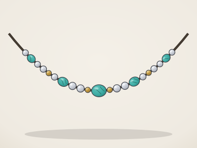
銀と金の玉の間に、空の色を宿すターコイズ。一連に組めばそれだけで凛と完成し、フェザーの組みに添えれば連なりにリズムが生まれます。育てるほどに味わいの深まる存在です。
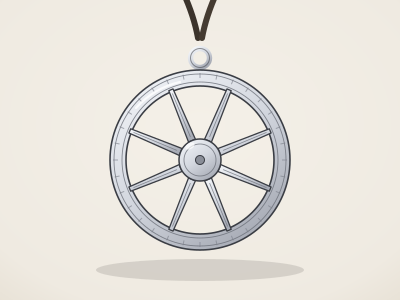
回り続ける車輪は、絶えず巡る人生と旅の象徴と言われています。円の中に張られたスポークの造形は、フェザーとは違う静かな力強さ。二本目の軸となる一品です。
探しても、出会えない日がある。
それでも——自分のもとへ来るべき銀は、
いつか、静かに、必ずやって来る。
六 STYLING
goro's は長いあいだ、無骨なメンズスタイルの文脈で語られてきました。けれど銀そのものは、着る人を選びません。シルクの上でも、パールの隣でも、フェザーは静かに輝きます。ここでは、フェミニンなワードローブに goro's を迎え入れるための考え方を、できるだけ具体的にお伝えします。
まず覚えておきたいのは、goro's の魅力が「対比」でこそ立ち上がる、ということです。手仕事の銀が持つ重み、鈍い光、わずかな荒々しさは、柔らかな素材と並んだ瞬間に、いっそう豊かな表情を見せます。とろみのあるブラウス、ふんわりとしたモヘアのニット、揺れるプリーツスカート。硬質なものと柔らかなもの——そのあいだに生まれる緊張感が、装い全体に一本の芯を通してくれます。ラフに着崩すための銀ではなく、「あなたの装いを引き締める銀」として考えてみてください。
ネックレスの印象は、チェーンや革紐の長さとネックラインの関係でほぼ決まります。Vネックなら、ペンダントの先端がVの底より少し上に来る長さを。鎖骨の下、肌の上に銀が直接のる位置が、いちばん美しく見えます。ボートネックや詰まった襟には、あえて服の上から長め（60〜70cm）を落として縦のラインを描くと、上半身がすっきりと見えます。そしてタートルネックは、銀にとって最高の舞台のひとつ。濃色のニットの上では、小さなフェザー一枚でも驚くほど際立ちます。
短めのチェーンや、耳もとで揺れる小さな銀は、視線を自然と顔へ引き上げてくれます。頬のそばで光を拾う銀は、いわば「身に着けるレフ板」。メイクの仕上げにハイライトをのせる感覚で、耳もとと鎖骨に小さな光を置いてみてください。逆に大ぶりのモチーフを主役にする日は、他を思いきって外す。「一点に絞る潔さ」が、重い銀を上品に見せるいちばんの近道です。
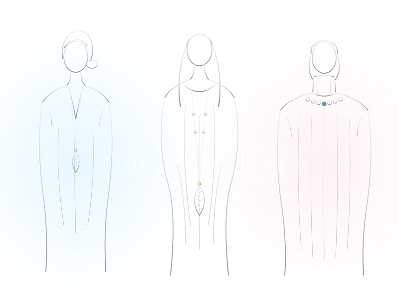
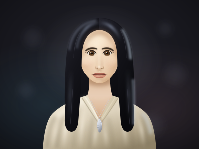
白のシルクブラウスに、60cmのチェーンで小さめのフェザーを一枚だけ。ボタンをひとつ多めに開け、胸もとの肌に銀を直接のせるのが鍵です。とろみ素材の光沢と銀の鈍い光が響き合い、昼はそのままオフィスへ、夜はディナーへ。迷ったとき、まず戻ってきたい原点のような装いです。
淡水パールの一連に、シルバービーズを長さ違いで重ねて。有機的な白い光と金属の光の交差は、上級者向けに見えて実は失敗の少ない組み合わせです。黒のワンピースに合わせれば、胸もとが夜空のように深くなります。フォーマル寄りの席でも浮かない、静かな華やぎ。
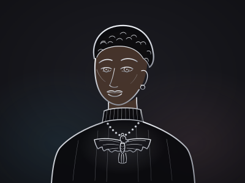
大ぶりのイーグルや大きなフェザーは、黒のタートルニットにひとつだけ。他のアクセサリーをすべて外す潔さが、彫りの陰影を最大限に見せてくれます。髪をまとめて首の線を出すと、銀の重さと輪郭の繊細さの対比がさらに美しく。夜の外出や、特別な日の一点主役に。
週末のデニムと白シャツには、金の差し色が入ったフェザーやポイントを。カジュアルな装いに金がひと粒あるだけで、「無造作」が「意図した抜け感」へと変わります。赤いリップや華奢なゴールドのフープと響かせれば、力の抜けた日こそ、いちばん自分らしい輝きに。
平日は「インナーに先が隠れる長さの細いチェーンに小さな一枚」あるいは「袖口に細いバングルだけ」と決めておくと、朝に迷いません。控えめでも、袖口や襟もとからのぞく銀は、あなただけが知っているお守りのように働きます。夜は同じフェザーにビーズを一連足すだけで、表情ががらりと変わります。ファインジュエリーとの併用も、恐れる必要はありません。ダイヤの華奢なリングの隣にごつめの銀、パールの下にフェザー——質感の違いこそが現代的です。ただし「銀を主役に、金は点で」と決めておくと、全体が破綻しません。
忘れないでください——ジュエリーに性別はありません。フェザーの大きさにも、チェーンの太さにも、「女性用」「男性用」という決まりはありません。女性であることのかたちがひとつではないように、銀のまとい方も人の数だけあります。鏡の前でいちばん背筋が伸びる着け方が、あなたにとっての正解です。
七 SIZE & FIT
美しいスタイリングの土台は、正しいサイズにあります。チェーンの長さ、リングの号数、バングルの内径——数センチ、数ミリの違いが、着け心地と印象を大きく変えます。ここでは、自宅でできる測り方まで含めて、実用的にご案内します。
ネックレスの長さは、印象を決めるいちばん大きな要素です。下の表を目安に、手持ちの服のネックラインと照らし合わせてみてください。なお、革紐は結び目の位置で長さを変えられるのが利点。その日の襟もとに合わせて調節できます。
| 長さ | 印象 | 合わせやすい装い |
|---|---|---|
| 40cm | チョーカー丈。首に沿い、凛とした緊張感が生まれる | ボートネック、オフショルダー、襟の開いたシャツ |
| 45cm | 定番の長さ。鎖骨の下で品よく収まる | Vネック、ブラウス、ほとんどの日常着 |
| 50cm | 鎖骨と胸もとの中間。程よい存在感 | クルーネックのニット、シャツの上から、重ねづけの中段 |
| 60cm | 胸もとに落ち、縦のラインを描く | タートルネック、厚手のニット、ワンピースの上から |
| 70cm | ロング丈。歩くたびに揺れ、ドレープと響き合う | ロングワンピース、コートの上、結んで長さを変える着け方も |
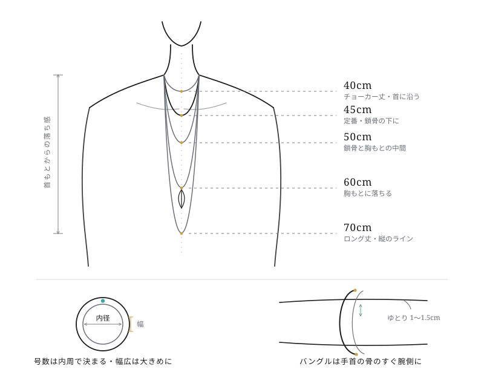
同じフェザーでも、大きさによって「読まれ方」が変わります。特小や小サイズは、肌になじむ小さな光——近づいた人だけが気づく、ささやきのような存在です。中サイズはバランスの要で、一枚でも重ねても様になります。大サイズは明確な主役。胸の上で彫りの陰影がはっきりと見え、装い全体の重心になります。骨格や身長で「正解」が決まるわけではありません。鏡の前で胸に当ててみて、自分の目が心地よいと感じる比率を信じてください。
日本のリングサイズは「号数」で表され、1号ごとに内周が約1mmずつ大きくなります。覚えておきたいのは二つ。まず、幅の広いリングは同じ号数でもきつく感じるため、幅5mmを超えるようなら0.5〜1号大きめが目安です。次に、指まわりは一日のうちでも変わるということ。朝はほっそり、夕方はややふくらむのが普通なので、測るなら夕方が安心です。季節によっても差が出ます。
ホルモン療法を続けている方は、数年のあいだに指まわりや手首の厚みがゆるやかに変わることがあります。「以前測ったサイズ」をそのまま信じ続けず、季節の変わり目などに測り直す習慣をおすすめします。リングによってはサイズ直しに対応できる場合もあるので、購入時に確認しておくと安心です。
バングルは、手首の骨（小指側のくるぶしのような出っぱり）のすぐ腕側に収まるのが基本の位置です。手首まわりの実寸に対して1〜1.5cmほどの余裕があると、動いたときに心地よく揺れます。着け外しは、親指を小指側に寄せて手をすぼめ、手のひらのいちばん細いところを通すのがコツ。無理にひねると変形の原因になるので、ゆっくりと。
銀は見た目以上に重さのある金属です。大ぶりのペンダントを細いチェーンで長時間着けると、首や肩が疲れることもあります。一日中身に着けるなら、まずは軽い一枚から始めて、少しずつ「自分の心地よい重さ」を知っていくのがおすすめです。重いトップには太めのチェーンや革紐を合わせると、重量が分散されて楽になります。
毛糸のように伸びる素材は避け、タコ糸・細いリボン・細く切った紙などを使います。あわせてペンと定規（またはメジャー）を手もとに。
ネックレスなら首の付け根に、リングなら指の付け根に一周。関節が太い指は関節部分も測ります。食い込ませず、紙一枚ぶんの余裕を持たせるのがコツです。
紐が重なった点にペンで印をつけ、外してまっすぐ伸ばし、定規で測ります。誤差を減らすため、2〜3回測って平均をとりましょう。
首まわりの実寸＋5〜10cmがネックレスの目安。指まわりの実寸（mm）は号数表と照らし合わせます。迷ったら、きつい方ではなく少しゆとりのある方を選んでください。
八 HOW TO BUY
goro's の銀に出会える場所は、世界にただ一軒。東京・原宿の本店だけです。公式のオンラインストアは存在せず、支店もありません。だからこそ、あの店の前に立つことそのものが、旅の一部になります。
goro's の買い方は、ふつうのショッピングとは少し違います。最もよく知られているのが、入店順を決める朝の抽選です。開店前の決められた時間に店の近くへ集まり、抽選によってその日の入店順が決まる——長く続いてきた、この店ならではの文化です。かつては夜通しの行列だった時代もあり、その後、公平さのために抽選方式へと移り変わってきたと言われています。集合時間や抽選の方法、入店の流れは、時期により運用が変わるため、訪れる前に必ず最新情報をご確認ください。ここに書けるのは「作法の輪郭」であって、当日のルールはいつも現地が正解です。
もうひとつ大切なのは、在庫との出会いは一期一会だということ。店頭に並ぶ品は日によって異なり、特定のアイテムを取り寄せたり予約したりすることはできません。お目当てのフェザーがその日にあるとは限らず、逆に、思いもしなかった一枚に心を掴まれることもあります。また、多くの人に行き渡るように、一度の入店で購入できる点数は絞られるのが慣例です。「欲しいものを待つ時間」も含めて goro's なのだと、通う人たちは言います。焦らないこと。それがいちばんの作法です。
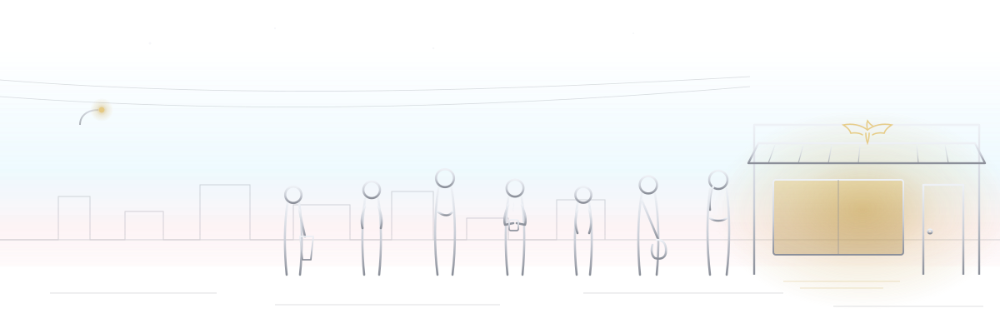
集合時間・抽選方法・入店ルールは変わることがあります。直近に訪れた人の情報や現地の案内を確認し、当日の朝に慌てないように。営業日もあわせてチェックしておきましょう。
指定の時間に間に合うよう、余裕をもって原宿へ。長く立って待つ可能性があるので、歩きやすい靴と季節に合った服装を。飲み物と、待ち時間のお供があると心強いです。
スタッフの案内に従って抽選に参加します。番号が決まったら、指定された時間まで待機。順番が遅くても落ち込まないで——その日の在庫との縁は、最後まで分かりません。
店内は小さく、静けさを大切にする空間です。ゆっくり見て、気になる品があればスタッフに声をかけましょう。組み方や革紐の長さなど、丁寧に相談に乗ってもらえます。購入点数の慣例にも従って。
買えても、買えなくても、一日はそこで完結です。手にした銀は大切に持ち帰り、出会えなかった日は「また来る理由ができた」と考える。それがこの店との長いつきあい方です。
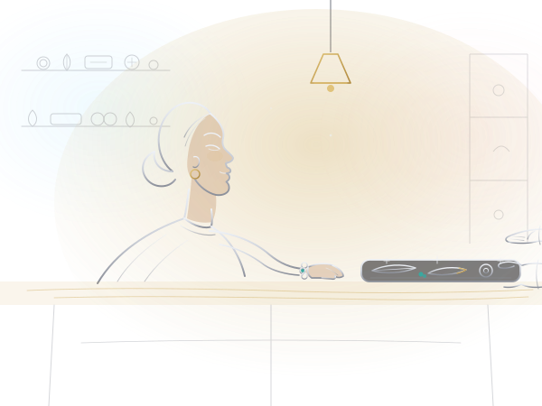
転売と偽物への注意。goro's は二次流通での高額転売が多く、近年は見分けの難しい精巧な偽物も出回っています。フリマアプリや素性の分からない個人間取引は避け、中古で求めるなら、鑑定体制のある信頼できる専門店だけを選んでください。相場から極端に外れた価格、曖昧な入手経路の説明は、それ自体が警告です。迷ったら、買わない勇気を。
トランス女性の読者の方へ、ひとつだけ実際的なことを。あの列は、同じ銀に憧れる者同士が並ぶ、ただの静かな行列です。皆それぞれ自分の番号と在庫のことで頭がいっぱいで、あなたの装いを詮索する場所ではありません。初めてで心細ければ、友人と一緒に並ぶのも良い方法です。堂々と、自分のペースで。あなたもまた、この文化を受け継ぐひとりです。
海外から、あるいは遠方から初めて訪れる方は、滞在に数日の余裕を持たせるのがおすすめです。在庫は日替わりなので、一度で出会えなくても再挑戦の余地が生まれます。会話は日本語が中心ですが、静かな所作と敬意があれば、言葉の壁はそれほど高くありません。現金・カードなど支払い手段の最新事情も、事前に確認しておくと安心です。
Prepare
歩きやすい靴、季節対策、飲み物、モバイルバッテリー。そして「今日は縁を見に行く」という軽やかな心構え。欲しい品の優先順位を決めておくと、店内で迷いません。
The Day
朝の集合 → 抽選 → 指定時間まで待機 → 順番に入店 → 静かに選んで購入。所要は半日と見ておくと余裕があります。詳細は時期により変わるため、最新情報の確認を忘れずに。
Another Day
落胆は半分まで。原宿・表参道を歩き、お茶を飲み、次に狙う一枚を心に決めて帰りましょう。「待った時間ごと愛せる」のが goro's の銀。縁は、また巡ってきます。
九 CARE
銀は、生きている金属です。空気中のわずかな硫黄分と結びついて表面が「硫化」し、少しずつ色を深めていきます。錆ではなく、時間の記録。だから goro's の世界では、これを「くすみ」ではなく「育ち」と呼びます。
手入れの方針は、大きくふたつあります。ひとつは、身につけたまま自然に任せ、燻したような深い色へと育てていく道。彫りの谷に影がたまり、輪郭が浮かび上がって、その人だけの表情になります。もうひとつは、こまめに磨いて明るい輝きを保つ道。どちらも正解で、優劣はありません。あなたの肌と装いに、どちらの銀が寄り添うか——それだけが基準です。途中で方針を変えても、銀はちゃんとついてきてくれます。
日々の基本は、とてもシンプルです。一日の終わりに柔らかい布でそっと拭い、汗と皮脂を落としてから休ませる。これだけで硫化の進み方は穏やかになります。気をつけたいのは硫黄と塩素。温泉の硫黄成分は銀を一気に黒く変色させ、プールの塩素も表面を傷めます。入浴・入水の前には必ず外してください。そして化粧をする方に大切な順番の話——スキンケア、下地、フレグランスまで全て終えてから、最後にジュエリーを。香水や化粧品の成分が直接つくと、変色やくすみの原因になります。「銀は仕上げの一手」と覚えておくと、毎朝の所作がきれいに決まります。
革紐は消耗品です。濡らさないこと、濡れたら陰干しで乾かすことを守りつつ、毛羽立ちや細りが目立ってきたら早めに交換を。ターコイズは目に見えない小さな孔をもつ繊細な石なので、溶剤や洗剤、長時間の直射日光を避けてください。市販の銀磨き液も、石つきの品には使わないのが安全です。深い硫化を一度きれいに戻したいときや、細部の汚れが気になるときは、無理に自分で磨かず、銀製品を扱う信頼できる専門店に相談を。彫りの艶を守りながら仕上げてもらえます。
Daily
外したら柔らかい布でひと拭き。汗と皮脂を残さないことが、いちばんの手入れです。研磨剤入りのクロスは「明るく保ちたい面」だけに、軽い力で。
Water
温泉の硫黄は急激な黒変のもと、プールの塩素も大敵。入浴・海・プールの前には外す習慣を。濡れてしまったら、真水を含ませた布で拭い、よく乾かします。
Scent & Makeup
スキンケア・メイク・香水がすべて終わってから、最後に銀を。付け外しの手にクリームが残っていないかも、さりげなく確認を。落とすときは逆に、いちばん最初に外します。
Rest
保管は布の小袋にひとつずつ。金属同士の当たり傷と、空気による硫化の両方を穏やかにできます。革紐は乾いた状態で、直射日光の当たらない場所へ。
| やっていいこと | 避けたいこと |
|---|---|
| 一日の終わりに柔らかい布で乾拭きする | 研磨剤で毎日ごしごし磨き続ける |
| スキンケアと香水のあと、最後に身につける | 香水や化粧品を銀に直接ふれさせる |
| 入浴・温泉・プールの前に外す | 温泉の硫黄や塩素にさらしたまま入る |
| 布の小袋に分けて保管する | 金属同士を重ねて引き出しに放り込む |
| 革紐は乾かして使い、傷んだら交換する | 濡れた革紐を放置し、切れるまで使う |
| ターコイズつきは専門店に手入れを相談する | 石つきの品を銀磨き液や溶剤に浸す |
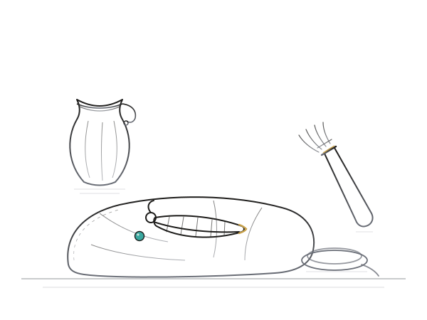
磨き上げた銀も、深く育った銀も、映しているのはあなたの毎日です。手入れとは、輝きを義務にすることではなく、ときどき手のひらに載せて、ここまでの時間を確かめること。今日も一日ありがとう、と拭いてしまえば、それでもう十分です。
十 COMMUNITY
買い物という行為には、小さな緊張がいくつも折りたたまれています。列に並ぶこと、店員さんと言葉を交わすこと、どう呼ばれるかということ。ジュエリーに試着室はありませんが、それでも扉の前で深呼吸したくなる日は、誰にでもあります。だからこの章では、意匠や技術の話をいったん置いて、心の支度の話をします。
まず、知っておいてほしいことがあります。goro's の店の前にできる列は、誰かを審査するための列ではありません。そこに立っているのは、銀という素材と、ひとりの職人が遺した意匠を敬愛する人たち。年齢も、性別も、装いも、驚くほどばらばらで、共通しているのは「この銀器が好きだ」という一点だけです。あなたがそこに並ぶ理由も、まったく同じでかまいません。接客は静かで簡潔だと言われていますし、案内は番号や順番で行われることが多く、望まない呼ばれ方をされる場面は、想像しているよりずっと少ないはずです。緊張は、好きなものの前に立つときの、ごく自然な胸の高鳴りとして連れていきましょう。
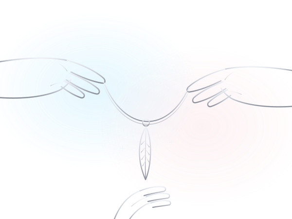
そして銀は、不思議な共通言語です。胸元のフェザーに気づいた誰かが、「それ、いいですね」とだけ言って微笑む。詮索も、説明も、証明も要らない、ただそれだけの会話。ジュエリーが開いてくれるのは、そういう柔らかい扉です。開けるかどうかは、いつでもあなたが決めていい。
With a Friend
信頼できる友人と一緒なら、待ち時間はそのまま雑談の時間に変わります。事前に「こう呼んでね」と伝えておけば、店先でのやりとりも安心。ひとりで抱えなくていい日が、あっていいのです。
Plan the Day
訪問を一日の主役に据えて、余裕のある計画を。歩きやすい靴、天気の確認、待ち時間のための本を一冊。原宿・表参道界隈には落ち着けるカフェが多く、結果を待つ時間さえ、ご褒美の時間に変えられます。
Online, Gently
コレクターのコミュニティは、SNS の上にも数多くあります。眺めるだけでも学びは豊か。参加するなら、本名・住まい・訪問の日程など、個人につながる情報は控えめに。心地よい距離感は、あなた自身が決めてよいものです。
そして、買えた日には——近くのカフェで、小さな祝杯を。革袋から取り出したばかりのフェザーをテーブルの真ん中に置けば、朝の列も、抽選の番号も、胸の高鳴りも、ぜんぶ笑い話に変わります。誰かと分かち合うお茶の一杯までが、goro's の一日なのだと思うのです。
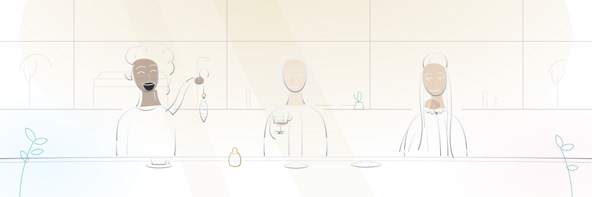
最後に、ひとつだけ約束を。ショーケースの前で誰かと目が合ったら、その人は競争相手ではなく、同じ星を見上げている人です。私たちのあいだにあるべきなのは、遠慮しあう譲り合いではなく、互いの選んだ銀を讃える、称え合い。「それ、あなたにとても似合う」——その短い一言が、誰かのその日を、ときにはもっと長い時間を、静かに支えることがあります。銀を分かち合う文化は、そうやって続いてきたのだと思うのです。
十一 FAQ
最後に、よく寄せられる疑問をまとめました。運用や価格は変わりゆくものです。ここでの答えはあくまで手がかりとして、最新の情報は必ず公式の発信でご確認ください。
現在、goro's が公式のオンラインストアを運営しているという情報はありません。購入は原宿の店舗での対面販売が基本とされています。「公式通販」を名乗るサイトを見かけたら、まず疑ってかかるのが安全です。
はい。定められた入店の手続きに沿えば、初めての方にも購入の機会は開かれています。常連でなければ買えない、ということはないと言われています。わからないことがあれば、当日の案内やスタッフの指示に従えば大丈夫です。
goro's の意匠に「男性用」「女性用」という区別はありません。フェザーもイーグルもホイールも、すべての意匠がすべての人のものです。サイズや重ね方で印象は自在に変わるので、性別ではなく「自分がどう在りたいか」で選んでください。
精巧な模倣品が多く、写真や刻印だけでの真贋判定は専門家でも難しいと言われています。最も確実なのは、店舗での正規の購入経路を選ぶことです。中古市場を利用する場合は、実績と保証のある店を慎重に選んでください。
小さなメタルやビーズから大ぶりのイーグルまで、価格の幅はとても広いです。また、価格は時期によって変動するため、ここに具体的な金額を記すことは控えます。当日、店頭で確認するのが最も確実です。
入店方法や抽選の運用は、これまでにも時期によって変わってきた経緯があります。曜日・時間・手順が変更されることもあるため、訪問の前に必ず最新の案内を確認してください。本サイトの記述も、将来の運用を保証するものではありません。
似合います。大切なのは体格ではなくバランスで、チェーンや紐の長さ、重ねる点数でいくらでも調整できます。小柄な方が大ぶりのフェザーをひとつだけ胸元に置くと、かえって凛とした求心力が生まれます。鏡の前で、長さを変えながら試してみてください。
銀製品は一般に純銀ではなく合金であり、体質によっては反応が出る場合があります。肌に不安のある方は、長時間の着用を急がず、様子を見ながら慣らしていくのが一般的なようです。症状がある場合は自己判断せず、医療の専門家に相談してください。本サイトは医療上の助言を行うものではありません。
銀は磨き直しや修理を重ねて、長く付き合っていける素材です。正規に購入した品であれば、まずは購入した店舗に相談するのが基本と言われています。他店やご自身での加工は意匠を損ねるおそれがあるため、慎重に。日々の手入れは「銀のケア」の章もご覧ください。
いいえ、まったくの非公式です。本サイトは goro's（有限会社髙橋吾郎商店）とは一切関係のない、ファンによるコンセプト／トリビュートサイトです。掲載している図版も、すべて本サイトのために描かれたオリジナルのイラストです。購入や製品に関する判断は、必ず公式の情報に基づいて行ってください。
十二 OUTRO
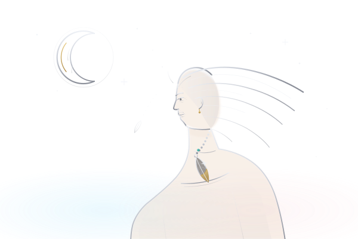
ここまで長い頁を、ともに歩いてくれてありがとう。
銀は、月の金属。夜のあいだも光をたくわえ、身につける人の温度で、すこしずつ艶を深めていきます。あなたがあなたとして生きてきた時間も、それと同じ。磨かれた日も、曇った日も、そのすべてが、いまの輝きの一部です。どうか焦らず、あなたの速度で。
いつか原宿の空の下、胸元に揺れるフェザーが、ほんとうのあなたを静かに映しますように。
銀は、ほんとうの自分を映す。——この言葉を、お守りとしてあなたに。